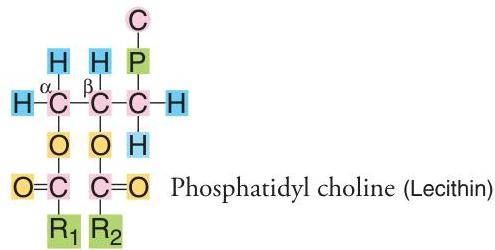
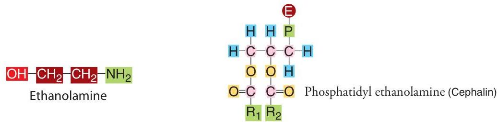
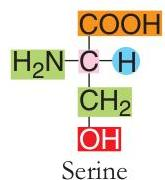
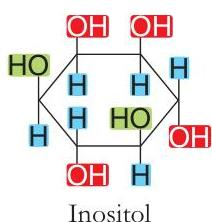

LIPIDS
Introduction to Lipids
Lipids are heterogenous group of compounds related either directly or indirectly (potentially) to fatty acids. They are insoluble in water but soluble in fat solvents like ether and benzene.
Fatty Acids
They are the monocarboxylic acids with a long hydrocarbon chain. The minimum number of carbon atoms required to be called as fatty acid is 4.
1. Saturated Fatty Acids
These fatty acids contain only single bonds along the length of the carbon chain. The fatty acids found in the human body contain even number (4, 6, 8, ...) of carbon atoms (Note: Source text says "odd number" but lists even numbers; biochemical standard is even numbers). All these are solids at room temperature.
| Name of fatty acid | Carbon Nos. |
|---|---|
| Butyric acid | 4 |
| Lauric acid | 12 |
| Myristic acid | 14 |
| Palmitic acid | 16 |
| Stearic acid | 18 |
| Arachidic acid | 20 |
2. Unsaturated Fatty Acids
These fatty acids contain one or more double bonds along the length of the hydrocarbon chain. In human tissues, the double bond is of cis type. They are liquids at room temperature.
(a) Monounsaturated fatty acids
Contain only one double bond.
| Name | Carbons | Position of double bond |
|---|---|---|
| Palmitoleic acid | 16 | cis $\Delta^9$ |
| Oleic acid | 18 | cis $\Delta^9$ |
(b) Polyunsaturated fatty acids (PUFA)
Contain two or more double bonds.
| Name | Carbons | Double bonds | Position |
|---|---|---|---|
| Linoleic acid | 18 | 2 | cis $\Delta^{9, 12}$ |
| Linolenic acid | 18 | 3 | cis $\Delta^{9, 12, 15}$ |
| Arachidonic acid | 20 | 4 | cis $\Delta^{5, 8, 11, 14}$ |
Essential Fatty Acids
The polyunsaturated fatty acids (Linoleic, Linolenic, Arachidonic) are known as essential fatty acids as they cannot be synthesized in the body and hence must be taken through the diet.
Other classes:
- Cyclic fatty acids: Chaulmorgic acid
- Hydroxy fatty acids:
- Saturated: Cerebronic acid
- Unsaturated: Ricinoleic acid
Simple Lipids
They are esters of fatty acids with alcohol.
1. Neutral Fats (Triacylglycerols)
These are esters of fatty acids with glycerol (a trihydric alcohol). These are known as triacylglycerols (TAG) or triglycerides.
If $R_1, R_2,$ and $R_3$ are the three fatty acids:
- Simple: If all three $R$ groups are the same (e.g., Tripalmitin, Tristearin).
- Mixed: If the $R$ groups are different (e.g., Palmeto-stearo-olein).
2. Waxes
These are esters of long chain fatty acids with long chain alcohol. e.g., Bee wax is ester of oleic acid (18 carbons) and oleyl alcohol (18 carbons).
Compound Lipids
Simple lipids in combination with some other group are called compound lipids.
1. Phospholipids
They contain a phosphoric acid as the prosthetic group.
(a) Glycerophospholipids
They contain the alcohol-glycerol. Components: Glycerol + 2 Fatty Acids + Phosphoric Acid + Base.
Phosphatidyl choline (Lecithin)
Base: Choline
Phosphatidyl ethanolamine (Cephalin)
Base: Ethanolamine
Phosphatidyl serine
Base: Serine
Phosphatidyl inositol
Base: Inositol
- Plasminogen: One fatty acid is replaced by a long chain aldehyde in enolic form.
- Cardiolipin (Diphosphatidyl glycerol): Two phosphatide groups linked by glycerol.
(b) Sphingophospholipids
Contain sphingol (amino alcohol, 18C) instead of glycerol. Example: Sphingomyelin (Ceramide + phosphate + choline). Ceramide = Sphingol + Fatty Acid.
2. Glycolipids
Contain a carbohydrate attached to sphingol. Also known as glycosphingosides or cerebrosides.
- Glucocerebrosides: Sugar is glucose.
- Galactocerebrosides: Sugar is galactose.
- Gangliosides: Complex sphingolipids with several sugar units (glucose, galactose, galactosamine) and sialic acid (N-acetyl-neuramic acid).
3. Lipoproteins
Lipids conjugated with proteins (apoproteins). Function: Transport of lipids in blood.
| Lipoprotein | Protein | TAG % | PL % | Cholesterol % | Function |
|---|---|---|---|---|---|
| Chylomicron | 2% (A,B,C,E) | 83 | 7 | 8 | Transport digested lipids |
| VLDL | 9% (B,C,E) | 50 | 19 | 22 | Transport TAG from liver |
| LDL | 21% (Apo B) | 10 | 22 | 47 | Transport cholesterol from liver |
| HDL | 33% (A,C,D,E) | 8 | 29 | 30 | Blood scavengers for cholesterol |
Derived Lipids
Compounds obtained on hydrolysis of simple/compound lipids or related to fatty acids.
Steroids
Compounds containing the cyclo-pentano-perhydro-phenanthrene ring. Sterols have an -OH group attached.
Cholesterol: Major sterol in the body. Constituent of cell membranes. Precursor for bile salts, sex hormones, vitamin D, corticosteroids.
Prostaglandins
Derivatives of polyunsaturated fatty acids (mainly Arachidonic acid). 20 carbon fatty acids with a 5-membered ring. Types: PGE, PGF, PGA, PGB.
Functions of Prostaglandins
- Act as vasopressors (lower blood pressure).
- Induction of labour, termination of pregnancy.
- Treatment of gastric ulcers (diminish HCl).
- Prevent inflammation.
- Promote platelet aggregation (Thromboxanes).
- $\mathrm{PGE}_2$ acts as second messenger.
Chemical Properties of Lipids
- 1 Saponification: Hydrolysis of TAG with KOH or NaOH is called saponification (soap formation).
- 2 Saponification number: Mg of KOH required to saponify 1 gram of fat. High number indicates low molecular weight fatty acids.
- 3 Iodine number: Grams of iodine required to saturate 100 grams of fat. Indication of unsaturation.
- 4 Rancidity: Partial hydrolysis and oxidation of unsaturated fatty acids leading to bad odour/taste. Prevented by antioxidants (Vitamin E, Vitamin C).
Molecular Structure of Cell Membrane
Each cell is surrounded by a lipid bi-layer. 70-80% are polar lipids (phosphoglycerides, sphingolipids) and the remainder is protein. Membranes are flexible, fluid, and 6-9 nm thick. They are impermeable to charged ions ($\mathrm{Na^+}, \mathrm{Cl^-}$) and polar molecules like sugars.